landscapes
I began my work on landscape photography a little over two years ago. to what degree of surrealism can my environments be pushed? that's the one question I ponder as I click the shutter. whether it's at a meadow in Concord, Massachusetts or the Golden Gate Bridge in San Francisco, I believe beauty can be found anywhere.

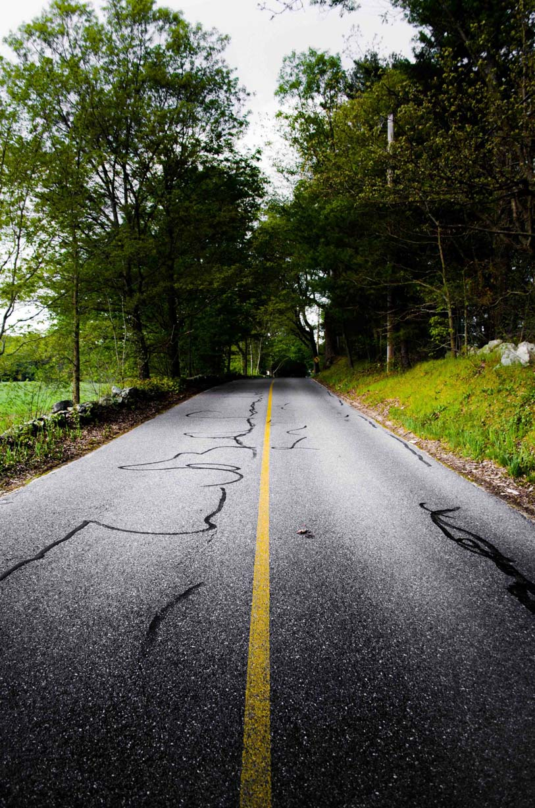
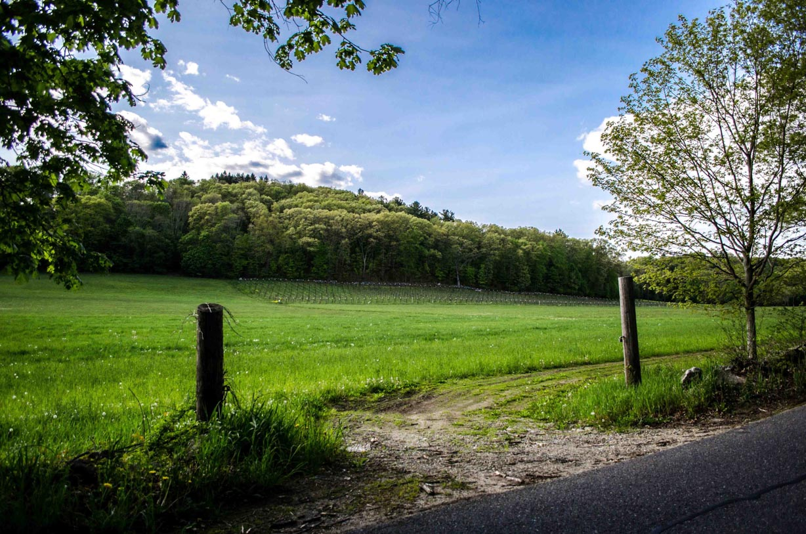
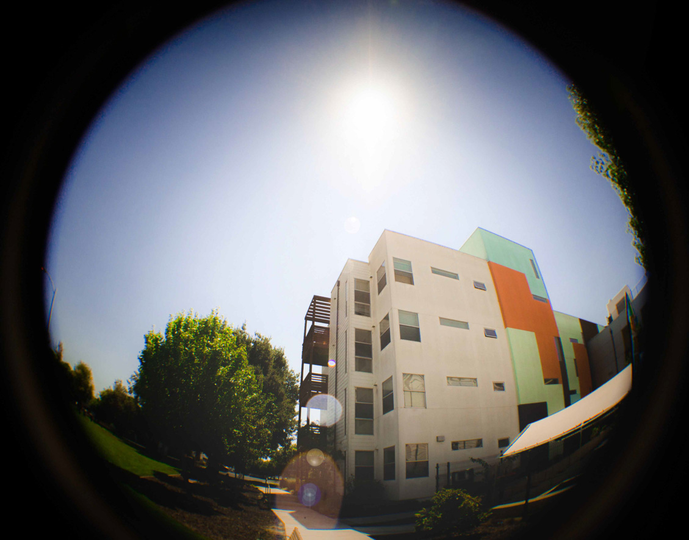
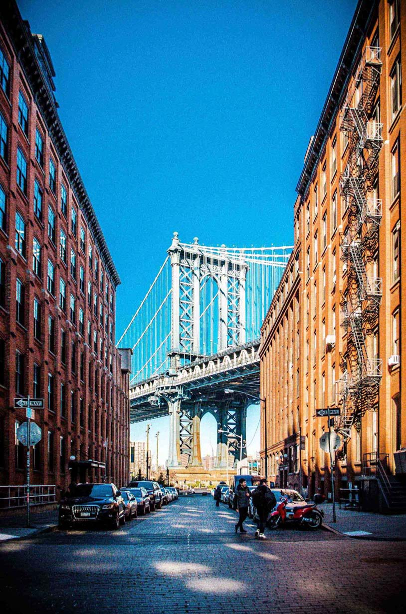
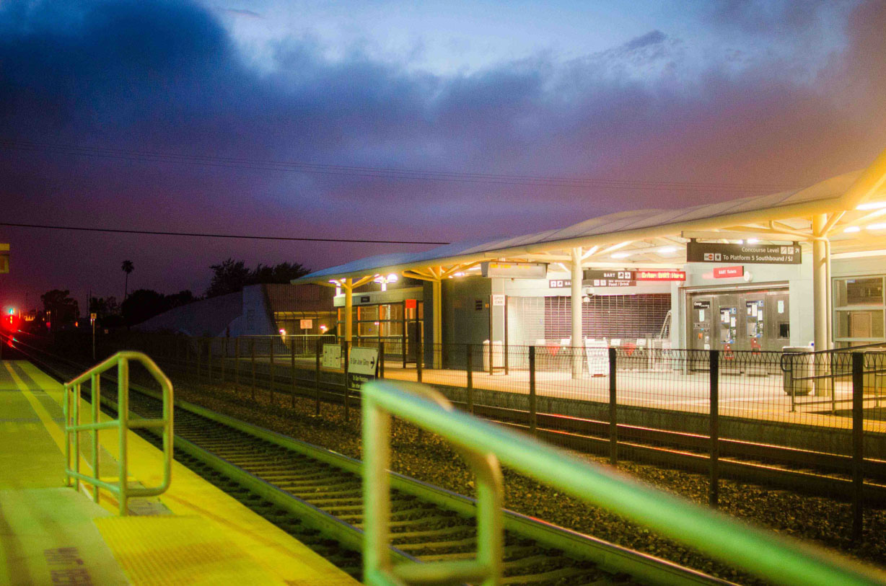
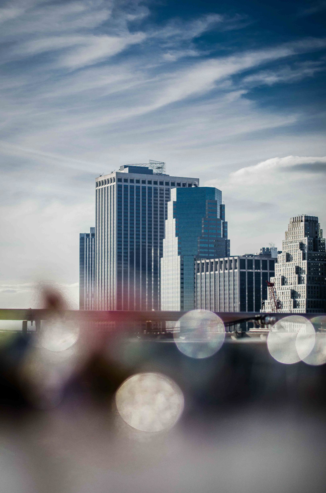
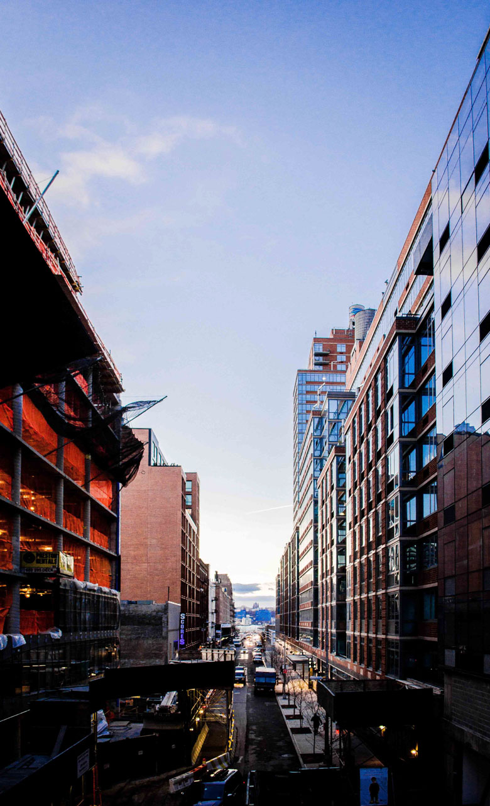
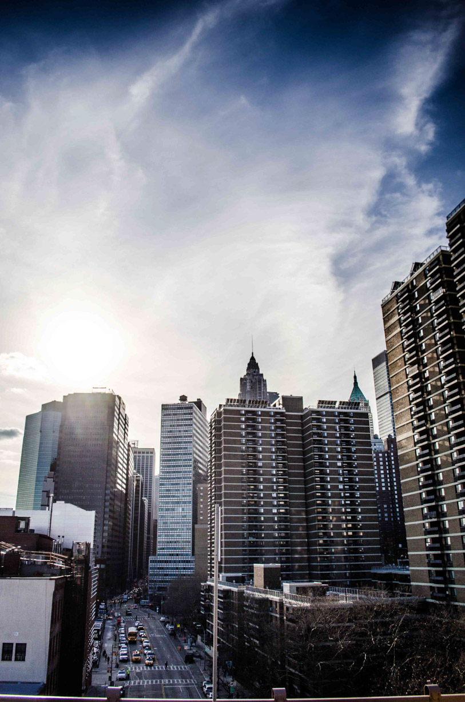
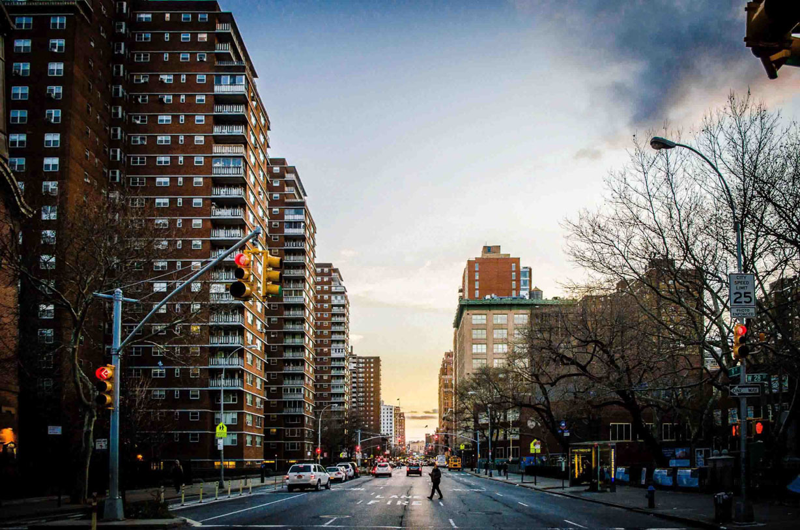
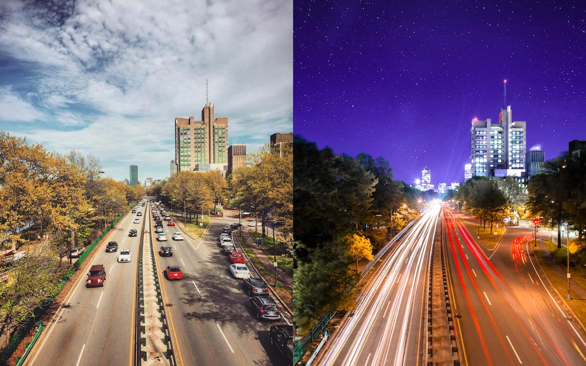
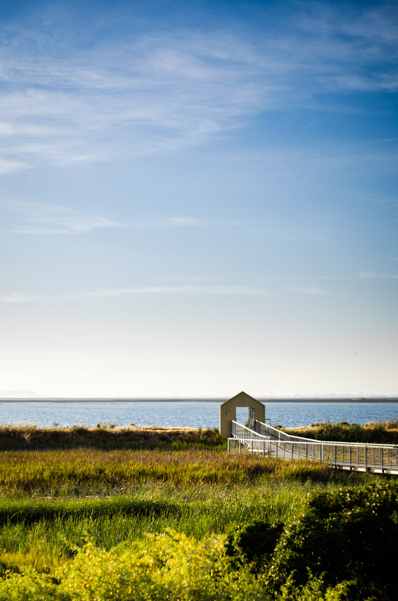
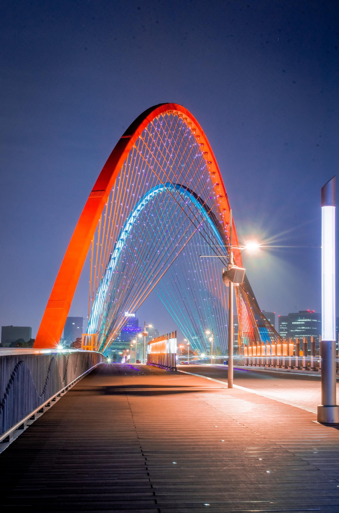